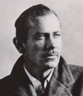

(1902 – 1968)

Sinemacılar bir kaynak olarak edebiyattan her zaman yararlandılar, ama John Steinbeck gibi bazı yazarların yazdıkları hemen hemen her şey sinemaya uyarlandı. Hatta kariyerinin doruğunda henüz yazmadığı romanlarının bile telif haklarını satar hale gelen John Steinbeck, biraz da bu yanıyla Amerikan romancılarının en tanınmışlarından biridir.
Modern Amerikan romanının en önemli yazarlarından olan John Steinbeck (okunuşu: Can Şteynbek), 27 Şubat 1902'de Amerika Birleşik Devletleri'nin Kaliforniya eyaletindeki Salinas kentinde doğdu. Orta halli bir ailenin çocuğuydu. Veznedar olan babası John Ernst Prusyalı, eski bir öğretmen olan annesi Olivia ise İrlandalı göçmen bir aileye mensuptur. Yaşıtları gibi o da küçük yaşlarda çiftçilik yaptı. 1920-1926 arasında aralıklarla Stanford Üniversitesi'ne devam etti, ama bitiremedi. Öğrenimini sürdürebilmek için duvarcılık, boyacılık, kapıcılık, eczacılık gibi işlerde çalıştı. Öğrencilik yıllarında başladığı yazmayı sürdürdü. Irgatlık ve işçilik yaparken edindiği deneyimler, eserlerinde işçilerin yaşamlarını gerçekçi bir dille anlatmasına büyük katkı sağladı. 1925 yılında yazar olmak için bir süreliğine New York'a gittiyse de tutunamayıp Kaliforniya'ya geri döndü. İlk romanlarından başlayarak hep işçileri, yaşam koşullarını, ilişkilerini anlattı. 1928 yılında rehberlik yaparken tanıştığı Carol Henning'le 1930'da evlendi.
Yazarın ilk romanı 1929'da yayımlanan Altın Kupa oldu. 1935 yılında yayımlanan ve Monterey'deki günlerini anlatan Tortilla Flat (Yukarı Mahalle) romanı yazara ilk büyük başarıyı getirdi ve sonunda Los Gatos'ta bir ev alan Steinbeck çifti, ilk kez kendi evlerinde oturmaya başladı. 30'lu yıllarda Steinbeck, Büyük Buhran günlerinde çok zor hayatlar yaşayan sıradan Amerikalıların hikayelerine yoğunlaştı. 1936'da yayımlanan Bitmeyen Kavga'da tarım işçilerinin grevini ve bu greve önderlik eden iki Marksisti anlattı. Amerikan çalışma sistemine keskin eleştiriler yöneltti. Üçüncü romanı Fareler ve İnsanlar 1937'de yayımlandı. Bu kez iki göçmen işçi arasındaki dostluktan hareket ederek her zaman kaybetmeye mahkum insanların öyküsünü anlattı. Roman, başarısının ardından sahneye de uyarlandı ve tiyatroda da çok olumlu eleştiriler aldı. Kendisine Pulitzer Ödülü getiren ünlü romanı Gazap Üzümleri, yazarın romanları arasında en gerçekçi ve başarılı olan eser olarak değerlendirildi ve 1940'ta, yönetmen John Ford tarafından sinemaya aktarıldı. Ancak roman Amerikan kapitalizmine çok sert eleştiriler getirdiği için yıllarca Amerikan okullarında ve halk kütüphanelerinde yasaklı bir kitap oldu. II. Dünya Savaşı yıllarında daha çok ideolojik eserler verdi. Bu yıllarda Hollywood da yazarı keşfetti ve kısa sürede hem yazdığı her roman çok önemli filmlere dönüştü hem de daha yazmadığı romanların bile film haklarını satabilecek hale geldi. İzleyen yıllarda politikadan uzak, eğlendirici yanı ağır basan duygusal öğelerin de yer aldığı eserler ve senaryolar yazdı. 1950 yılında üçüncü ve son kez evlenen Steinbeck, iki yıl sonra "en sevdiğim romanım" dediği Cennetin Doğusu'nu yayımladı ve bu roman da diğerleri gibi hemen filme çekildi.
1962'de edebiyata katkılarından dolayı Nobel Edebiyat Ödülü'ne layık görülen John Steinbeck, ülkesi ABD'de kapitalizm ve sisteme yönelik eleştirilerinden dolayı devlet güçleri tarafından uzun süre taciz edildi. Yazarın aleyhinde hiçbir kanıt bulamayan CIA şefi Edgar J. Hoover'ın şu sözü tarihe geçti: "Hiç olmazsa vergi defterlerini didik didik edin ki ceza veremesek de huzursuzluk verelim!"
20 Aralık 1968 tarihinde New York City'de kalp krizinden ölen John Steinbeck, hemen hemen tüm romanları sinemaya uyarlanmış ve uyarlanmakta olan ender edebiyatçılardan biridir.
Seçme Romanları: Tortilla Flat (Yukarı Mahalle, 1935), Bitmeyen Kavga (1936 – Oda Yayınları, İstanbul, 1995), Fareler ve İnsanlar (1936), Gazap Üzümleri (1939), Ay Battı (1942), Sardalya Sokağı (1945), Cennetin Doğusu (1952 – Remzi Kitabevi, İstanbul, 2011), Tatlı Perşembe (1954 – Remzi Kitabevi, İstanbul, 2005), Viva Zapata! (1975)